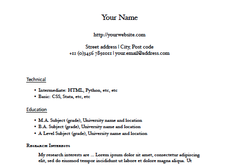

Writing your CV with Markdown and Pandoc
A few months ago Steve Harris introduced me to the pleasures of writing in Markdown. Since then it has been my format of choice for anything text-based. Simple, clear, and non-crashy. So much nicer than working with Word.
At least one person thinks Markdown is for hipsters but (a) I like hipsters and (b) maybe he's never experienced the horror of opening a Word file saved as HTML.
Markdown is easily converted to all sorts of document types with Pandoc, making it a great native format. You write in Markdown and convert to DOC, PDF, etc when necessary.
Lots of people write their CVs in Markdown already, but it took me a little time to find a style I liked for the PDF output. I ended up using a template by Craig Eley, with a couple of minor changes.

The modified version is online at: https://github.com/tompollard/markdown-cv. To produce a PDF of your CV:
- Edit the source/cv.md file.
- Run 'make pdf' in the folder containing the Makefile.
- Pick up the PDF from output/cv.pdf.
Latex and Pandoc will need to be installed on your system for this to work. You can modify and improve the style by editing the template at source/style/template.tex (Pandoc creates PDFs via Latex).